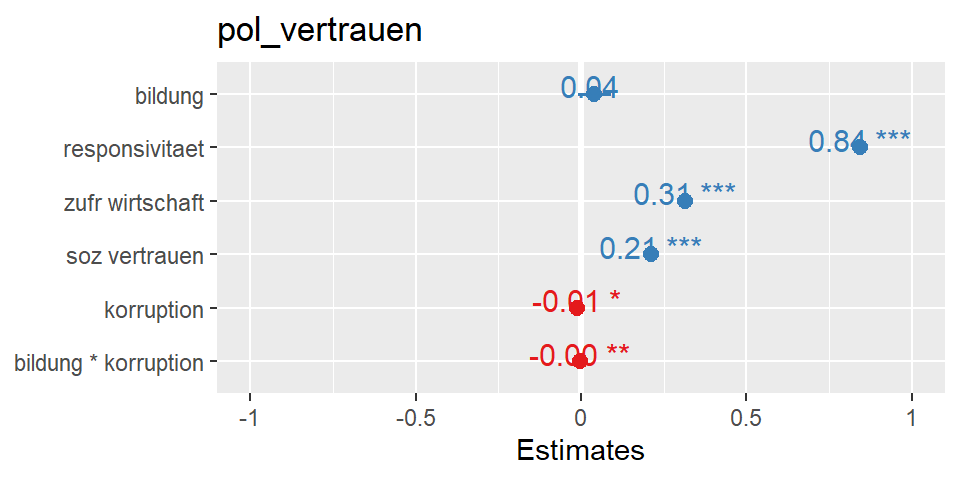
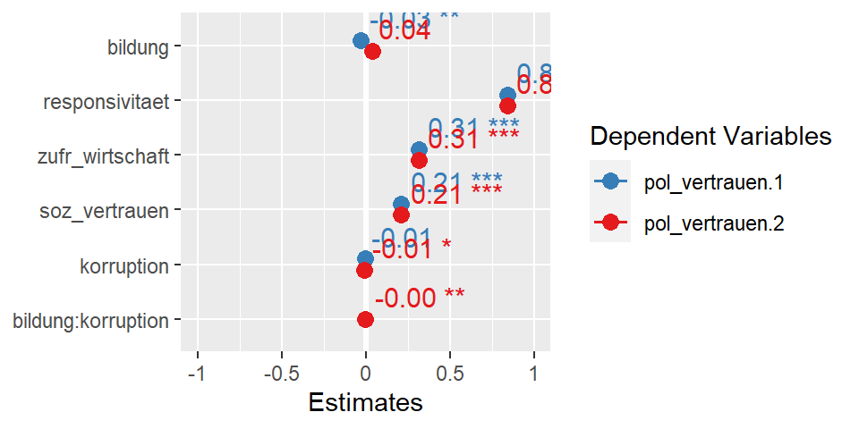
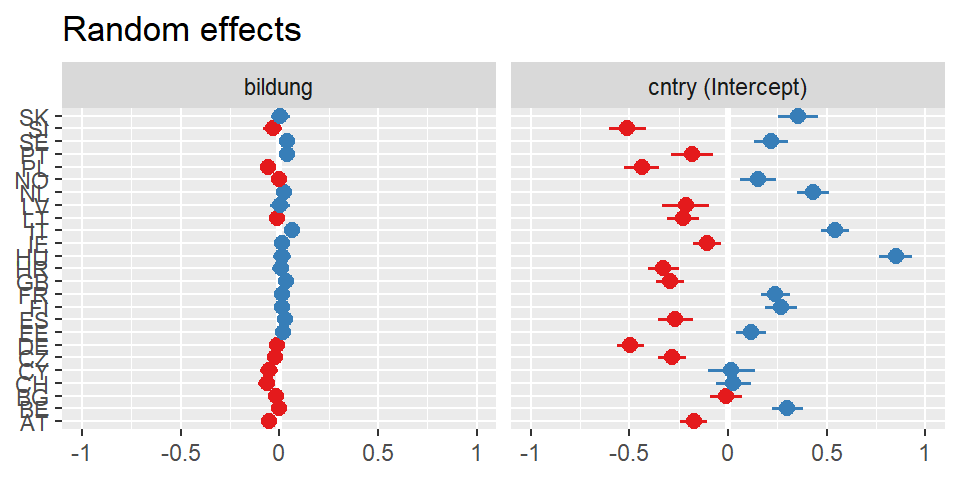
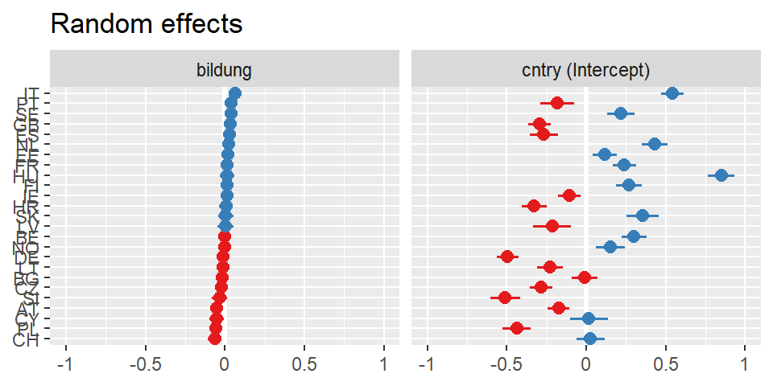
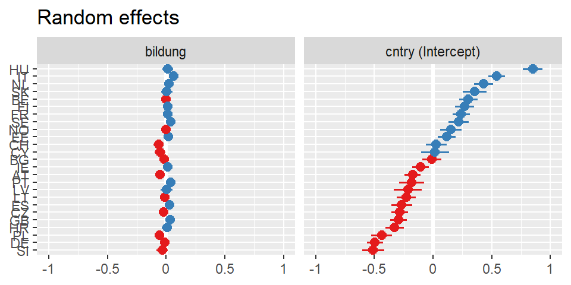
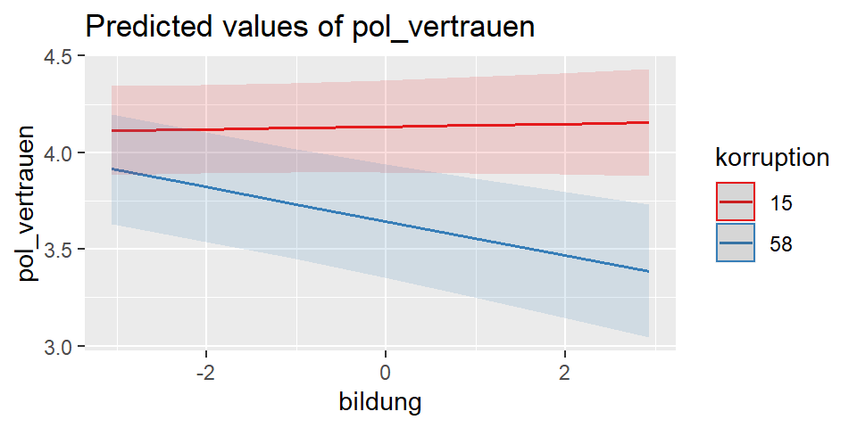

6. Wie lassen sich die Ergebnisse einer Mehrebenregression berichten?
Themenüberblick
In diesem Teil sechs beschäftigen wir uns mit der Frage: Wie lassen sich die Ergebnisse einer Mehrebenregression berichten?
In den vergangenen Teilen 4 und 5 haben wir nacheinander verschiedene Varianten des Mehrebenenmodells geschätzt und interpretiert. Mithilfe der Anova haben wir geprüft, ob die aufeinander aufbauenden Modelle jeweils besser an die Daten angepast ist.
In diesem Teil wird es darum gehen, wie man die Ergebnisse dieser Modelle berichtet und wie man die relevanten Quantites of Interest grafisch aufbereitet.
Die konkreten Lernziele sind, dass Sie mit R in der Lage sind…
- die Regressionsergebnisse tabellarisch gegenüberzustellen.
- die fixed Effects als Forrestplot grafisch darzustellen.
- die variierenden Intercepts und variierende Slopes grafisch darzustellen.
- Cross-Level Interaktionen mit Effekt-Plots grafisch darzustellen.
Dazu wechseln wir nun zu R.
Vorbereitung der Daten und Modelle
Wie auch schon zuvor, müssen wir das komplette RScript aus dem vorigen Teil 5 mit der source()-Funktion ausühren, um die Daten zu laden (RScript_mreg5.R bei den Ressourcen).
source("./Ressourcen/RScript_mreg5.R") #Pfad zur Datei ggf. anpassenTabellen zu den Regressionsmodellen
Um die Ergebnisse der Regressionen tabellarisch aufzubereiten, nutzen wir das texreg-Paket.
Das Paket enthält mehrere Funktionen, um die Ergebnisse unterschiedlicher Regressionsmodelle automatisch aufzubereiten und als Tabelle auszugeben.
Dabei unterscheiden sich die Funktionen, je nach dem, in welchem Format die Tabellen formatiert werden sollen:
screenreg()gibt die Tabelle auf dem Bildschirm in der RConsole aus.
library(texreg)
screenreg(list(mreg3,mreg4))
============================================================
Model 1 Model 2
------------------------------------------------------------
(Intercept) 4.14 *** 4.31 ***
(0.19) (0.19)
bildung -0.03 ** 0.04
(0.01) (0.02)
responsivitaet 0.84 *** 0.84 ***
(0.01) (0.01)
zufr_wirtschaft 0.31 *** 0.31 ***
(0.00) (0.00)
soz_vertrauen 0.21 *** 0.21 ***
(0.00) (0.00)
korruption -0.01 -0.01 *
(0.01) (0.01)
bildung:korruption -0.00 **
(0.00)
------------------------------------------------------------
AIC 154568.42 154574.58
BIC 154654.39 154669.14
Log Likelihood -77274.21 -77276.29
Num. obs. 39998 39998
Num. groups: cntry 25 25
Var: cntry (Intercept) 0.13 0.13
Var: cntry bildung 0.00 0.00
Cov: cntry (Intercept) bildung 0.01 0.00
Var: Residual 2.78 2.78
============================================================
*** p < 0.001; ** p < 0.01; * p < 0.05wordreg()erstellt die Tabelle in einem Microsoft Word Format. Dafür muss nur die Zieldatei alsfile-Argument angegeben werden.
wordreg(list(mreg3,mreg4),
file = "./Docs/tabelle.doc")Aber der Königsweg ist natürlich, die Tabellen über RMarkdown direkt in html- oder Latex-Dokumenten erstellen zu lassen.
htmlreg()erstellt die Tabelle im html-Format.texreg()gibt die Tabelle im Latex Format aus.
Auch dieses Dokument wurde mit RMarkdown erstellt, wir können hier also die Tabellenausgabe des Aufrufs htmlreg() sehen:
htmlreg(list(mreg3,mreg4))| Model 1 | Model 2 | |
|---|---|---|
| (Intercept) | 4.14*** | 4.31*** |
| (0.19) | (0.19) | |
| bildung | -0.03** | 0.04 |
| (0.01) | (0.02) | |
| responsivitaet | 0.84*** | 0.84*** |
| (0.01) | (0.01) | |
| zufr_wirtschaft | 0.31*** | 0.31*** |
| (0.00) | (0.00) | |
| soz_vertrauen | 0.21*** | 0.21*** |
| (0.00) | (0.00) | |
| korruption | -0.01 | -0.01* |
| (0.01) | (0.01) | |
| bildung:korruption | -0.00** | |
| (0.00) | ||
| AIC | 154568.42 | 154574.58 |
| BIC | 154654.39 | 154669.14 |
| Log Likelihood | -77274.21 | -77276.29 |
| Num. obs. | 39998 | 39998 |
| Num. groups: cntry | 25 | 25 |
| Var: cntry (Intercept) | 0.13 | 0.13 |
| Var: cntry bildung | 0.00 | 0.00 |
| Cov: cntry (Intercept) bildung | 0.01 | 0.00 |
| Var: Residual | 2.78 | 2.78 |
| ***p < 0.001; **p < 0.01; *p < 0.05 | ||
Damit Sie auch den passenden Markdown Code-Chunk sehen, probieren wir das kurz aus…
Dieses Code-Snippet kopiere ich in ein RMarkdown-Dokument, das ich dann als html oder als pdf-Datei knitten kann. Wichtig ist, das das Code-Chunk Argument results='asis' angegeben wird.
#```{r, results='asis'}
source("./RScript_mreg5.R")
library(texreg)
htmlreg(list(mreg3,mreg4))
texreg(list(mreg3,mreg4))
#```Abgesehen vom texreg-Paket kann man altrenativ die tab_model()-Funktion aus dem sjPlot-Paket nutzen. Auch diese Funktion erstellt für unterschiedlichste Regressionsmodelle die passenden Tabellen. Zudem lassen sich die Tabellen sehr kleinteilig den eigenen Bedürfnissen anpassen.
Hilfe und Erläuterungen gibt es auch in der Vignette zum Paket: https://strengejacke.github.io/sjPlot/articles/tab_mixed.html
library(sjPlot)
#?tab_model
# Gibt Tabelle im RStudio Viewer aus
tab_model(mreg0, mreg3,mreg4,
p.style = "stars",
use.viewer = T)| pol_vertrauen | pol_vertrauen | pol_vertrauen | ||||
|---|---|---|---|---|---|---|
| Predictors | Estimates | CI | Estimates | CI | Estimates | CI |
| (Intercept) | 3.89 *** | 3.48 – 4.31 | 4.14 *** | 3.78 – 4.51 | 4.31 *** | 3.93 – 4.68 |
| bildung | -0.03 ** | -0.05 – -0.01 | 0.04 | -0.01 – 0.09 | ||
| responsivitaet | 0.84 *** | 0.82 – 0.87 | 0.84 *** | 0.82 – 0.86 | ||
| zufr wirtschaft | 0.31 *** | 0.30 – 0.32 | 0.31 *** | 0.30 – 0.32 | ||
| soz vertrauen | 0.21 *** | 0.20 – 0.22 | 0.21 *** | 0.20 – 0.22 | ||
| korruption | -0.01 | -0.02 – 0.00 | -0.01 * | -0.02 – -0.00 | ||
| bildung * korruption | -0.00 ** | -0.00 – -0.00 | ||||
| Random Effects | ||||||
| σ2 | 4.26 | 2.78 | 2.78 | |||
| τ00 | 1.11 cntry | 0.13 cntry | 0.13 cntry | |||
| τ11 | 0.00 cntry.bildung | 0.00 cntry.bildung | ||||
| ρ01 | 0.38 cntry | 0.34 cntry | ||||
| ICC | 0.21 | 0.05 | 0.05 | |||
| N | 25 cntry | 25 cntry | 25 cntry | |||
| Observations | 39998 | 39998 | 39998 | |||
| Marginal R2 / Conditional R2 | 0.000 / 0.207 | 0.433 / 0.460 | 0.446 / 0.471 | |||
| * p<0.05 ** p<0.01 *** p<0.001 | ||||||
Oder man kann die Tabelle in einer Datei speichern:
tab_model(mreg0, mreg3, mreg4,
p.style = "stars",
use.viewer = F,
file = "./Docs/tabelle.html")| pol_vertrauen | pol_vertrauen | pol_vertrauen | ||||
|---|---|---|---|---|---|---|
| Predictors | Estimates | CI | Estimates | CI | Estimates | CI |
| (Intercept) | 3.89 *** | 3.48 – 4.31 | 4.14 *** | 3.78 – 4.51 | 4.31 *** | 3.93 – 4.68 |
| bildung | -0.03 ** | -0.05 – -0.01 | 0.04 | -0.01 – 0.09 | ||
| responsivitaet | 0.84 *** | 0.82 – 0.87 | 0.84 *** | 0.82 – 0.86 | ||
| zufr wirtschaft | 0.31 *** | 0.30 – 0.32 | 0.31 *** | 0.30 – 0.32 | ||
| soz vertrauen | 0.21 *** | 0.20 – 0.22 | 0.21 *** | 0.20 – 0.22 | ||
| korruption | -0.01 | -0.02 – 0.00 | -0.01 * | -0.02 – -0.00 | ||
| bildung * korruption | -0.00 ** | -0.00 – -0.00 | ||||
| Random Effects | ||||||
| σ2 | 4.26 | 2.78 | 2.78 | |||
| τ00 | 1.11 cntry | 0.13 cntry | 0.13 cntry | |||
| τ11 | 0.00 cntry.bildung | 0.00 cntry.bildung | ||||
| ρ01 | 0.38 cntry | 0.34 cntry | ||||
| ICC | 0.21 | 0.05 | 0.05 | |||
| N | 25 cntry | 25 cntry | 25 cntry | |||
| Observations | 39998 | 39998 | 39998 | |||
| Marginal R2 / Conditional R2 | 0.000 / 0.207 | 0.433 / 0.460 | 0.446 / 0.471 | |||
| * p<0.05 ** p<0.01 *** p<0.001 | ||||||
Grafische Darstellung der Ergebnisse
Das Schweizer Taschenmesser der grafischen Darstellung von Regressionsergebnissen ist das schon genannte Paket sjPlot.
Die Darstellung der fixed Effects erfolgt wie bei ganz gewöhnlichen Regressionsmodellen. Um die fixed Effects grafisch darszustellen nutze ich die Funktion plot_model():
library(sjPlot)
plot_model(mreg4,
show.values=T)
Diese Darstellung lässt sich noch durch zahlreiche Optionen anpassen und verschönern. Das ist aber nicht mehr Teil dieser Videoserie.
Wenn wir mehrere Modelle vergleichen wollen, nutzen wir die Funktion plot_models() (das Plural-s macht den Unterschied).
library(sjPlot)
plot_models(mreg3, mreg4,
show.values=T)
plot_models hat aber auch Mehrebenenmodell-spezifische Optionen. Ich empfehle auf jeden Fall einen Blick in die Dokumentation:
https://strengejacke.github.io/sjPlot
Um einen Eindruck von den random Effects zu bekommen, also von den variierenden Intercepts und variierenden Slopes kann man der Funktion plot_model() mit dem argument type="re" sagen, dass die random effects dargestellt werden sollen.
plot_model(mreg4, type="re")
Wenn ein Modell mehr als einen Random Effect aufweist, kann man mit sort.est angeben, nach welchem Effekt sortiert werden soll.
plot_model(mreg4, type="re", sort.est = "bildung")
plot_model(mreg4, type="re", sort.est = "(Intercept)")
Schließlich kann der Cross-Level Interaktionseffekt dargestellt werden, indem man als type="int" spezifiziert.
plot_model(mreg4, type="int")
Hier sieht man sehr anschaulich, was der Interaktionseffekt von \(-0.002\) bedeutet.
Wie auch im Forrest Plot oder in der Tabelle ausgegeben sehen wir auch hier, dass der Effekt von Bildung nicht signifikant ist - und zwar für Länder, die sehr sauber sind.
Der in der Tabelle berichtete Effekt für Bildung ist ja der Effekt, den wir für Länder schätzen, deren Wert für korruption bei \(0\) liegt. Empirisch ist dieser Wert nicht vorhanden. Das sauberste Land hat einen Wert von \(15\). Das sehen wir hier auch in der Grafik. Die rote Linie gibt den Effekt für Bildung wieder, den dieses am wenigsten Korrupte Land aufweist. Zwar ist die Linie leicht ansteigend, da aber das Konfindenzband so breit ist, dass Anfang und Ende der Linie auf der jeweils gegenüberliegenden Seite immernoch innerhalb des Konfindenzbandes liegen wissen wir, dass der Effekt nicht signifikant ist.
Anders bei Ländern mit den höchsten Wert auf dem Korruptionsindex. Hier sehen wir einen negativen Effekt. Je höher die Bildung, desto geringer ist das beobachtete Niveau an politischem Vertrauen.
Natürlich gibt es für die Zwischenschritte von Korruption auch die jeweiligen Slopes für Bildung. Das lässt sich aber grafisch dann nicht überischtlich darstellen.
Zwar sind die Konfindenzbänder für beide Linien relativ zur Effektgröße recht breit. Dennoch sehen wir schon bei wenig über dem Minimum liegenden Werten von Bildung, dass sich die Konfidenzbänder einseitig nicht überschneiden, also signifikante Unteschiede zwischen den unterschiedlich korruptionsbelasteten Ländern bestehen.
Inhaltlich ist das ein interessantes Ergebnis: Zunächst schien es, dass Bildung negativ auf politisches Vertrauen wirkt. Bei genauerem Hinsehen zeigt sich, dass der Effekt von Bildung varriert. In Ländern mit geringer Korruption hat Bildung keinen Einfluss. Mit zunehmender Korruption zeigt sich, dass Menschen mit höherer Bildung weniger Vertrauen. Für Menschen mit weniger Bildung, zeigt sich jedoch kein Unterschied.
Schluss
Damit sind wir am Ende des letzten Teils der Videoreihe Mehrebenenregression in R.
Sie wissen nun, was eine Mehrebenenregression ist. Sie können beurteilen, wann eine Mehrebenenrgression notwendig ist, sie kennen die verschiedenen Varianten und können diese mit R rechnen und entscheiden, welches Modell das passende ist. Und Sie können die Ergebnisse tabellarisch und mit Grafiken aufbereiten.
Für die praktische Anwendung sind Sie bereits gut gerüstet. Trotzdem lassen sich zahlreiche Aspekte vertiefen. So können Sie sich zum Beispiel noch mit der Regressionsdiagnostik in Mehrebenenmodellen vertraut machen (z.B. mit dem Paket HLMdiag oder dem Paket DHARMa). Oder Sie können Generalsierte Mehrebenenmodelle betrachten, die dann für nicht-metrische abhängige Variablen geeignet sind.
Wenn Sie die Mehrebenenregression von Grundauf verstehen möchsten, dann empfehle ich Ihnen das Buch Raudenbush & Bryk (2002): Hierarchical Linear Models Applications and Data Analysis Methods. Sage.
Am Ende des Videos gibt es wie immer noch eine kleine Aufgabe.
Aufgabe
- Stellen Sie zu Ihrer eigenen Fragestellung die Regressionsergebnisse der verschiedenen Modelle vergleichend als Tabelle dar.
- Bereiten Sie die Quantites of Interest der Mehrebenenmodelle (Variierende Intercepts, variierende Slopes, Cross-Level Interaktionseffekte) grafisch auf.
Lernzielabgleich
Haben Sie alles mitgenommen? Fragen Sie sich selbst, ob Sie die folgenden Lernziele erreicht haben:
- die Regressionsergebnisse tabellarisch gegenüberzustellen.
- die fixed Effects als Forrestplot grafisch darzustellen.
- die variierenden Intercepts und variierende Slopes grafisch darzustellen.
- Cross-Level Interaktionen mit Effekt-Plots grafisch darzustellen.